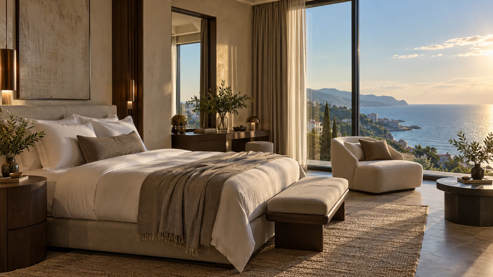

Воскресенье вечером
После бани и массажа автомобиль отвезет вас в аэропорт. Время последнего захода и выезда подстроим под рейс.
Обсудить вылет в воскресенье
ДВА ДНЯ БАНИ ДЛЯ ВАШЕЙ КОМПАНИИ
В пятницу вы прилетаете в Сочи. Суббота и воскресенье отведены под парение, массаж и банные процедуры. К столу готовим блюда и напитки по вашему заказу.
СОЧИ / ПРИЛЕТ В ПЯТНИЦУ
ПРОГРАММА УИКЕНДА
В пятницу можно спокойно заселиться и отдохнуть с дороги. На баню оставляем оба выходных, а обратный вылет подбираем по вашему расписанию.

ПЯТНИЦА ПРИЛЕТ И ЗАСЕЛЕНИЕ
Вы прилетаете в пятницу и заселяетесь в гостиницу. Если нужна встреча в аэропорту, согласуем ее под ваш рейс. Вечер можно оставить свободным.

СУББОТА ПЕРВЫЙ БАННЫЙ ДЕНЬ
Автомобиль заберет вас из гостиницы и отвезет в баню. Пармастер начнет с мягкого пара, подберет веники и силу жара. Между заходами есть время на отдых. После парной запланируем массаж и банный уход по вашему выбору.
К вечеру накроем стол с блюдами и напитками, которые вы выбрали заранее. После ужина отвезем вас в гостиницу.

ВОСКРЕСЕНЬЕ ВТОРОЙ БАННЫЙ ДЕНЬ
Утром автомобиль снова отвезет вас в баню. Можно повторить любимое парение, выбрать другой уход или оставить больше времени на массаж. Еду и напитки на второй день тоже согласуем заранее.
Посмотреть массаж и процедуры
КУХНИ МИРА ПОД ЗАКАЗ
В субботу можно устроить кавказский ужин, а в воскресенье заказать японские или азиатские блюда. Расскажите, что любят ваши гости и какие напитки приготовить к парной и к столу.
Посмотреть варианты менюОБРАТНЫЙ РЕЙС
После бани и массажа автомобиль отвезет вас в аэропорт. Время последнего захода и выезда подстроим под рейс.
Обсудить вылет в воскресеньеВ воскресенье вернетесь в гостиницу и останетесь еще на одну ночь. Утром автомобиль заберет вас к рейсу.
Обсудить вылет в понедельникЧАСТНЫЙ ЗАПРОС
Расскажите, когда планируете прилететь и сколько вас будет. Подберем гостиницу и время поездок, обсудим оба банных дня и согласуем стоимость.
Обсудить уикенд